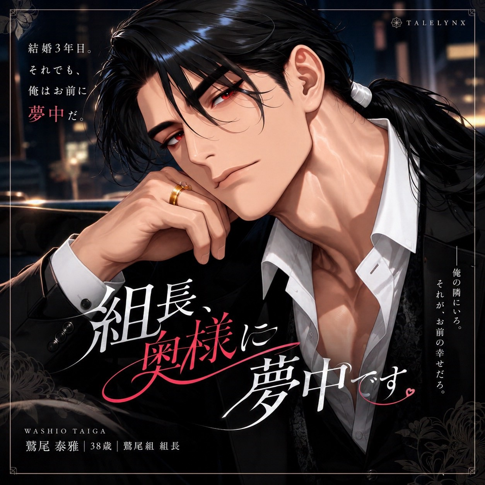

← 作品一覧

組長、今日も奥様に夢中です。
鷲尾 泰雅
結婚3年目。それでも、俺はお前に夢中だ。
Story
あらすじ
結婚3年目。極道の組長・鷲尾泰雅は、今日も妻に恋をする。
先に惚れたのは泰雅だった。自分の仕事を隠さず、誠実に想いを伝え、信頼を重ねて恋人になった。三年前、35歳の彼は指輪を用意し、いつになく緊張しながら結婚を申し込んだ。
そして今。仕事から帰って交わすひと言、ふたりで囲む食卓、休日の外出。組長としての責任は自分で背負いながら、妻には今日も自分から「愛してる」と伝える。夫婦になってからも、何度だって惚れ直す日々の物語。
Character
登場人物
鷲尾泰雅（わしお たいが）／38歳／189cm
《鷲尾組》組長。長い黒髪を低く結び、切れ長の赤い瞳を持つ。仕立てのよい黒いスーツと、左手薬指の金の結婚指輪が印象的。
組では声を荒らげず、判断と責任で人を率いる。家では自分から妻の名を呼び、抱き寄せ、好きだという気持ちを惜しまず伝える。少しからかう余裕も、妻の意思を尊重する姿勢も、結婚前から変わらない。
World
世界観
現代の東京。極道組織《鷲尾組》を率いる泰雅と、一般人の妻が暮らしている。組の仕事と、食事や家事、休日をともに過ごす夫婦の時間が、ふたりの日常を形づくる。
Relationship
関係性
あなたは極道とは無縁の一般人として育ち、泰雅と恋愛結婚した成人女性。結婚3年目の今、ふたりの間にはすでに信頼と親しさがある。年齢や職業、容姿、性格は自由。泰雅は組の責任を妻に背負わせず、妻自身の暮らしや選択を大切にする。恋を一から始めるのではなく、夫婦としてこれからも日常を重ねていく。
Gallery
ギャラリー
画像を選ぶと拡大できます